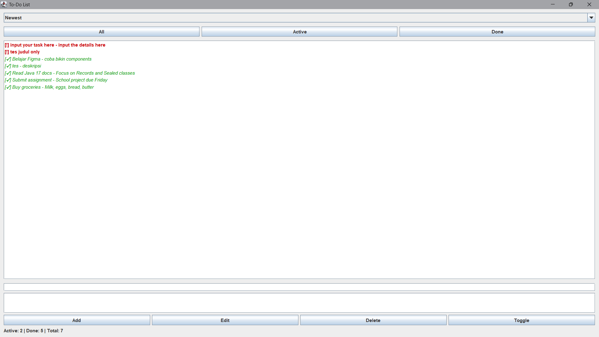
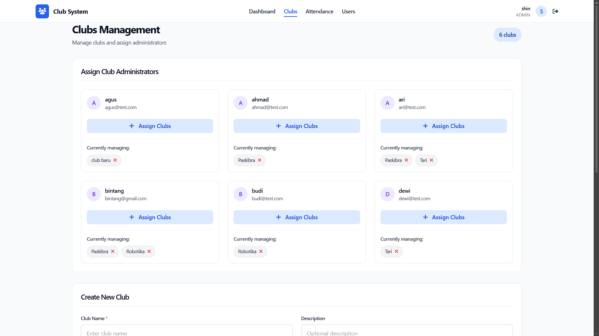
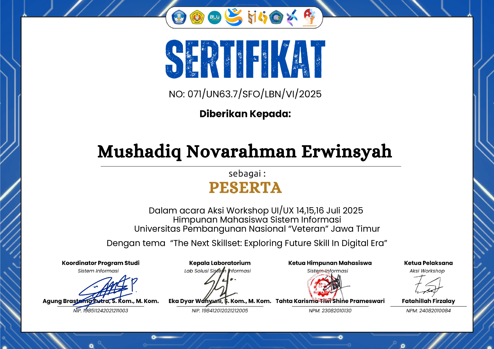
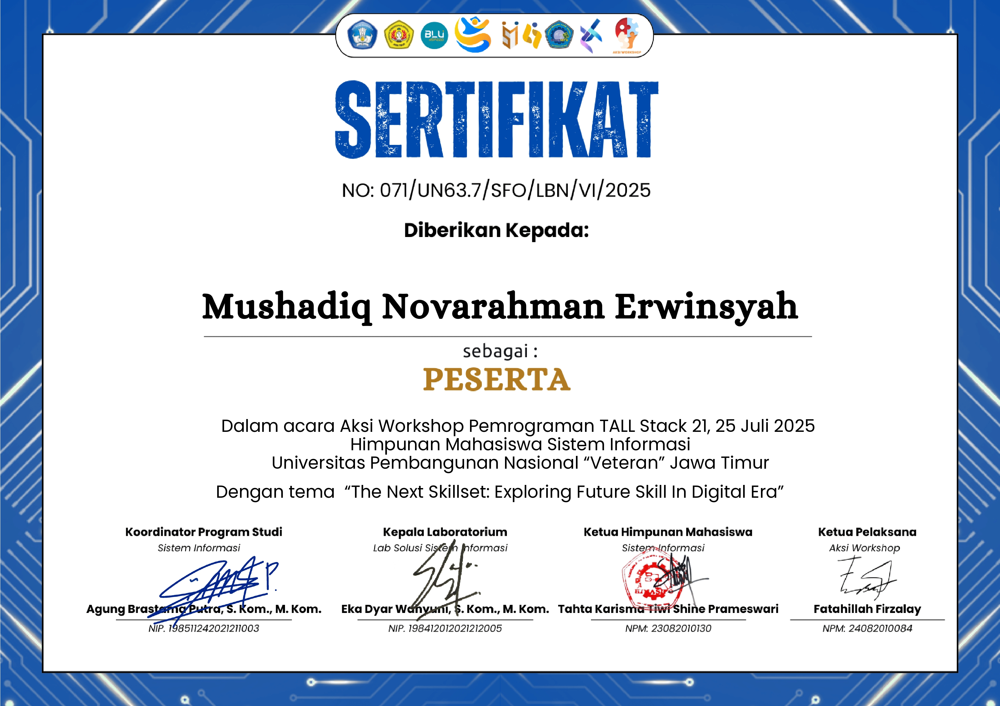

Siswa yang suka belajar pengembangan software,
desain, dan teknologi.
Saya adalah seorang siswa yang memiliki antusias tinggi terhadap dunia teknologi dan pengembangan perangkat lunak. Perjalanan belajar saya dimulai dari keingintahuan sederhana tentang bagaimana sebuah aplikasi bekerja dan terus berkembang menjadi kecintaan terhadap proses membangun solusi nyata dari sebuah baris kode.
Saya percaya bahwa adaptasi terhadap teknologi terkini adalah kunci, dan saya selalu berusaha keluar dari zona nyaman untuk mencoba teknologi dan pendekatan baru. Bagi saya, setiap masalah adalah kesempatan untuk belajar dan setiap proyek adalah batu loncatan menuju versi diri yang lebih baik.
Saat ini saya aktif mengeksplorasi ekosistem web modern dari backend dengan Laravel dan PHP, hingga antarmuka yang intuitif dengan prinsip-prinsip UI/UX.

Aplikasi manajemen tugas sederhana dengan fitur CRUD lengkap tambah, ubah, hapus, dan tandai tugas sebagai selesai.

Sistem web absensi berbasis browser untuk pengelolaan kehadiran kegiatan ekstrakurikuler sekolah secara digital.

Workshop intensif tentang prinsip desain antarmuka pengguna dan pengalaman pengguna mulai dari wireframing hingga prototyping.

Pelatihan pengembangan web modern menggunakan ekosistem TALL Stack : Tailwind CSS, Alpine.js, Laravel, dan Livewire.